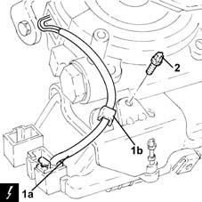
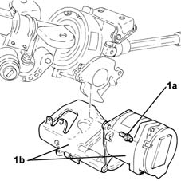

4110D35 Electrically controlled steering CONTROL UNIT/MOTOR - R.R.
- Path
- Procedures > 41 STEERING > 4110 STEERING CONTROL AND LINKAGE > 4110D steering electrical control system > 4110D35 Electrically controlled steering CONTROL UNIT/MOTOR - R.R.
- Kind
- repair procedure (removal / refitting; the operation number is the code)
- Applies to
- all engines; all production periods
- Interactive page
- https://sloeber94.github.io/elrnDB-lYpsln/en/#/2429222
Applies to: all engines; all production periods
 Removing
Removing
 Refitting
RefittingMake sure that the ignition key is in the OFF position; then disconnect the battery negative (-) terminal.
 | Name | Connector |
|---|---|---|
- | Battery |
Proceed with removal 5580C18 air bag module - r+r .
Proceed with removal 4110A11 steering wheel - r+r for replacement or check for versions with air bag .
Proceed with removal .
Proceed with removal 7040A30 Left instrument panel lower TRIM - R.R. .
Proceed with removal 5550A12 complete stalk unit - r+r for versions with air bag .
Proceed with removal 4110D20 steering electrical control device - r r .
1. Disconnect the remaining electrical connection (1a) from the electric steering control unit and release the electrical wiring from the band (1b).
| Name | Connector |
|---|---|---|
1a | Electric steering control unit |
2. Undo the bolt fixing the electrically controlled steering motor/control unit.

Applies to: all engines; all production periods
1. Undo the remaining bolts (1a) and remove the electrically controlled steering motor/control unit (1b).

Applies to: all engines; all production periods
Refitting
RemovingPlace the electrically controlled steering motor/control unit back in its housing and secure it tightening the bolts to the recommended torque.
 | Fastening | Component | Ø | Value (daNm) |
|---|---|---|---|---|
- | Bolt | ELECTRICALLY CONTROLLED STEERING CONTROL UNIT/MOTOR | - | 0.8 ÷ 1.0 |
Connect the electrical connection to the electric steering control unit and fasten the electrical wiring using the band.
Proceed with refitting 4110D20 steering electrical control device - r r .
Proceed with refitting 5550A12 complete stalk unit - r+r for versions with air bag .
Proceed with refitting 7040A30 Left instrument panel lower TRIM - R.R. .
Proceed with refitting .
Proceed with refitting 4110A11 steering wheel - r+r for replacement or check for versions with air bag .
Proceed with refitting 5580C18 air bag module - r+r .
Connect the negative (-) battery terminal.
Topics linked from this page (7)
- 4110A11 steering wheel - r+r for replacement or check for versions with air bag
- 4110D20 steering electrical control device - r r
- 5550A12 complete stalk unit - r+r for versions with air bag
- 5580C18 air bag module - r+r
- 7040A30 Left instrument panel lower TRIM - R.R.
- A1B Battery ( BATTERY NEGATIVE )
- M86 Electric steering control unit